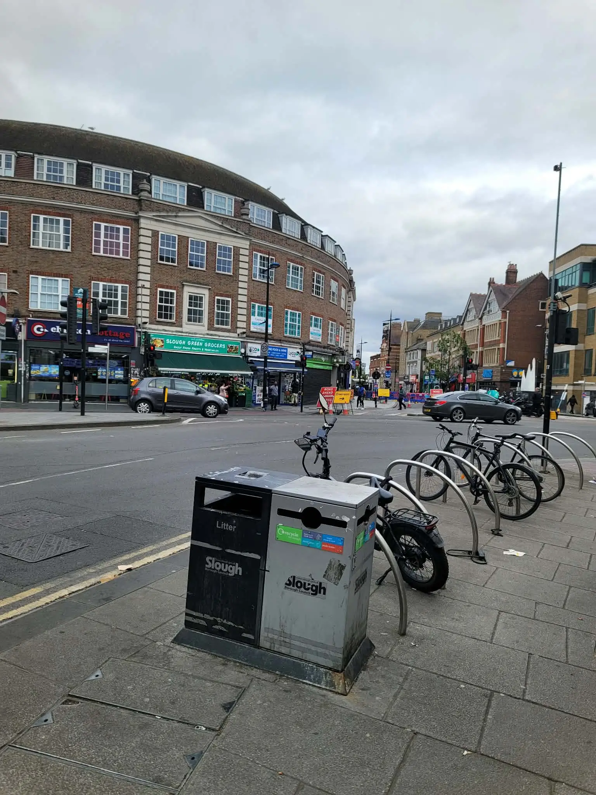

If you're planning a new base or replacing an older base, you can either call or send an email enquiry using the form below.
Most homeowners usually contact us to discuss sizing, garden access, reinforcement options or general suitability before moving ahead with installation.
You can use the form below to send over your project details, estimated shed size or any questions about your garden setup.